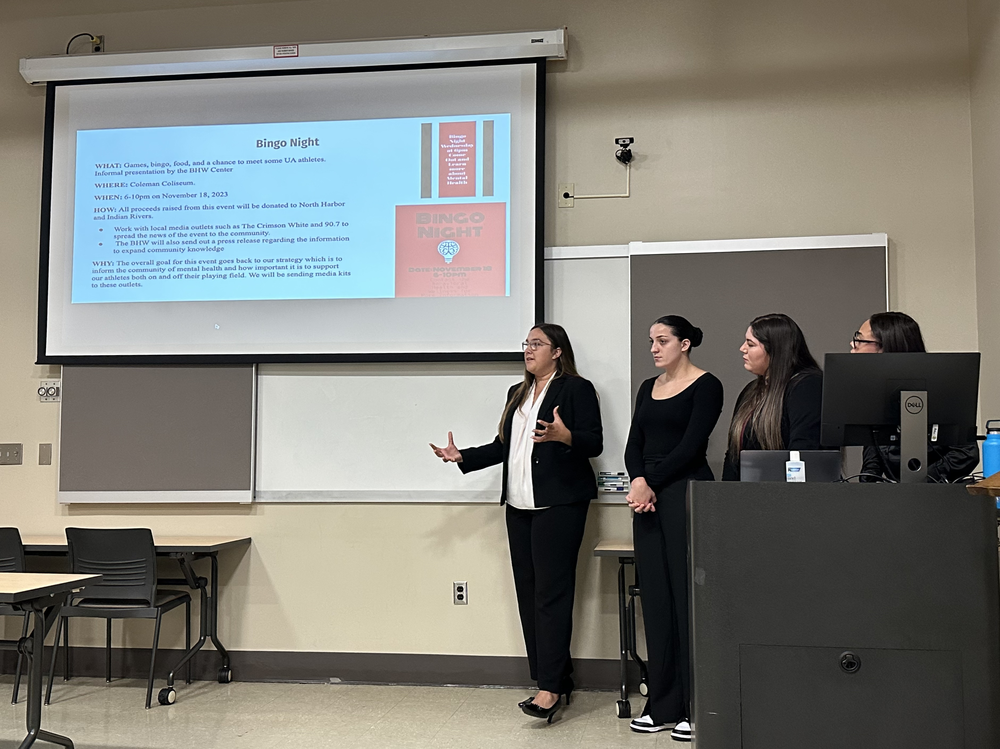
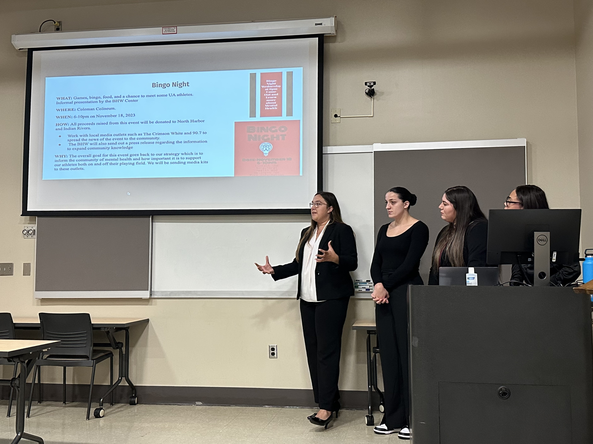

Publications
-
Huang, M., Mikkilineni, S. D., Lee, J., & Duboise, M. (2024). The effects of augmented
reality on prosocial behavior intentions in the disaster news context: The mediating role of physical presence and empathy.
New Media & Society, 14614448241252594.
https://doi.org/10.1177/14614448241252594
[SSCI]
-
Huang, M., & Ki, E.-J. (2023). Examining the effect of anthropomorphic design cues on healthcare chatbots acceptance and organization-public relationships: Trust in a warm human vs. a competent machine.
International Journal of Human-Computer Interaction.
https://doi.org/10.1080/10447318.2023.2290378
[*Corresponding Author] [SSCI]
-
Huang, M., & Ki, E.-J. (2023). Protecting organizational reputation during a para-crisis: The effectiveness of conversational human voice on social media and the roles of construal level, social presence, and organizational listening.
Public Relations Review, 49(5), 102389.
https://doi.org/10.1016/j.pubrev.2023.102389
[*Corresponding Author] [SSCI]
-
Huang, M., Ki, E.-J., & Gong, H. (2023). Linking community OPR and communication infrastructure during a public health crisis: A study of community engagement in Shanghai, China.
Health Communication, 1–10.
https://doi.org/10.1080/10410236.2023.2251747
[SSCI]
-
Ki, E.-J., Kang, D. Y., & Huang, M. (2022). The state of health public relations: A content analysis of published articles in seven communication journals from 2001 to 2021.
Public Relations Review, 48(5), 102255.
https://doi.org/10.1016/j.pubrev.2022.102255
[SSCI]
-
Gong, H., Huang, M., & Liu, X. (2022). Message persuasion in the Pandemic: U.S. and Chinese respondents’ reactions to mediating mechanisms of efficacy.
International Journal of Communication, 16, 840–863.
https://ijoc.org/index.php/ijoc/article/view/17839
[SSCI]
-
Gong, H., Zhang, Y., & Huang, M. (forthcoming). Encountering uncertainty: The effect of social media influencers’ crisis attribution on public perception of responsibility.
Journalism & Communication.
[In Chinese] [CSSCI]
-
Gong, H., Xu, Y., & Huang, M. (2022). The persuasive mechanism of “science communication influencer” in the pandemic: Two experimental studies based on the elaboration likelihood model.
Chinese Journal of Journalism & Communication, 44(5), 110–133.
http://cjjc.ruc.edu.cn/CN/Y2022/V44/I5/110
[*Corresponding Author] [In Chinese] [CSSCI] [Cite: 35]
-
Presentation
-
Huang, M., & Ki, E.-J. (2024, November 21–24). Human vs. virtual influencers: Exploring emotional narratives for effective mental health communication strategies.
The 110th Annual Convention of National Communication Association (NCA), New Orleans, US.
-
Dong, X., & Huang, M. (2024, August 8–11). “I” speak out, “We” speak louder? The moderating role of self-construal in the impact of opinion congruence with SNS friends and experts on expression intentions.
The 107th Annual Conference of Association for Education in Journalism and Mass Communication (AEJMC), Philadelphia, US.
-
Huang, M., & Ki, E.-J. (2024, June 20–24). How do social media influencers provide mental health support for college students: A content analysis of YouTube videos about mental health.
The 74th Annual International Communication Association Conference (ICA), Gold Coast, Australia.
-
Guo Y., & Huang, M. (2024, June 20–24). Bridging mindfulness, empathy, and descriptive norms with disaster communication: The moderating power of collectivism in the “Beijing-Tianjin-Hebei” floods.
The 74th Annual ICA Conference, Gold Coast, Australia.
-
Huang, M. (2024, March 7–9). Misinformation verification and correction: Social risk perception and motivational drivers in the Fukushima wastewater release controversy.
The 27th Annual International Public Relations Research Conference (IPRRC), Orlando, US.
-
Huang, M., & Rahman, T. (2023, November 16–19). What motivates people’s information-seeking and social support offering following celebrity depression disclosure: The role of identification and transportation.
The 109th Annual Convention of NCA, Washington, D.C., US.
-
Huang, M., & Ki, E.-J. (2023, August 7–10). Protecting organizational reputation during a para-crisis: The effectiveness of conversational human voice on social media and the roles of construal level, social presence, and organizational listening.
The 106th Annual Conference of AEJMC, Washington, D.C., US.
-
Huang, M., & Ki, E.-J. (2023, August 7–10). Examining the effect of anthropomorphic design cues on healthcare chatbots acceptance and organization-public relationships: Trust in a warm human vs. a competent machine.
The 106th Annual Conference of AEJMC, Washington, D.C., US.
-
Huang, M., Mikkilineni, S. D., & Lee, J. (2023, August 7–10). Exploring the impact of augmented reality in disaster journalism: An integrated research framework.
The 106th Annual Conference of AEJMC, Washington, D.C., US.
-
Huang, M., & Ki, E.-J. (2023, May 25–29). Linking community OPR and communication infrastructure during a public health crisis: A study of community engagement in Shanghai, China.
The 73rd Annual ICA Conference, Toronto, Canada.
-
Kim, J., Mikkilineni, S., & Huang, M. (2023, March 23–26). Integrating VR into tourism marketing: The effects of immersion and temporal distance on destination image.
The 2023 American Academy of Advertising Annual Conference (AAA), Denver, US.
-
Huang, M. (2022, August 3–6). Gender, family, and health: A mixed-methods study of discussion among Chinese social media users on maternal health.
The 105th Annual Conference of AEJMC, Detroit, US.
-
Ki, E.-J., Kang, D. Y., & Huang, M. (2022, May 26–30). The status of health public relations: A content analysis of published articles in seven public relations journals from 2001 to 2021.
The 72nd Annual ICA Conference, Paris, France.
 
